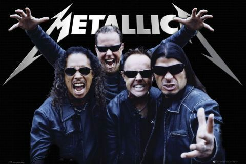

Metallica is an American heavy metal band. The band was formed in 1981 in Los Angeles by vocalist/guitarist James Hetfield and drummer Lars Ulrich, and has been based in San Francisco for most of its career.[1][2] The band's fast tempos, instrumentals and aggressive musicianship made them one of the founding "big four" bands of thrash metal, alongside Megadeth, Anthrax and Slayer. Metallica's current lineup comprises founding members and primary songwriters Hetfield and Ulrich, longtime lead guitarist Kirk Hammett, and bassist Robert Trujillo. Guitarist Dave Mustaine (who went on to form Megadeth after being fired from the band) and bassists Ron McGovney, Cliff Burton (who died in a bus accident in Sweden in 1986) and Jason Newsted are former members of the band.
After two albums on Megaforce Records and signing to major label Elektra in 1984, Metallica first found commercial success with the release of its third album, Master of Puppets (1986), which has been described as one of the heaviest and most influential thrash metal albums. Their next album, ...And Justice for All (1988), was also successful and gave Metallica their first Grammy Award nomination. Its eponymous fifth album, Metallica (1991), the band's first not to root predominantly in thrash metal, appealed to a more mainstream audience, achieving substantial commercial success and selling over 16 million copies in the United States to date, making it the best-selling album of the SoundScan era. After experimenting with different genres and directions in subsequent releases, the band returned to its thrash metal roots with the release of its ninth album, Death Magnetic (2008), which drew similar praise to that of the band's earlier albums. Their most recent album is Hardwired... to Self-Destruct, released in 2016.